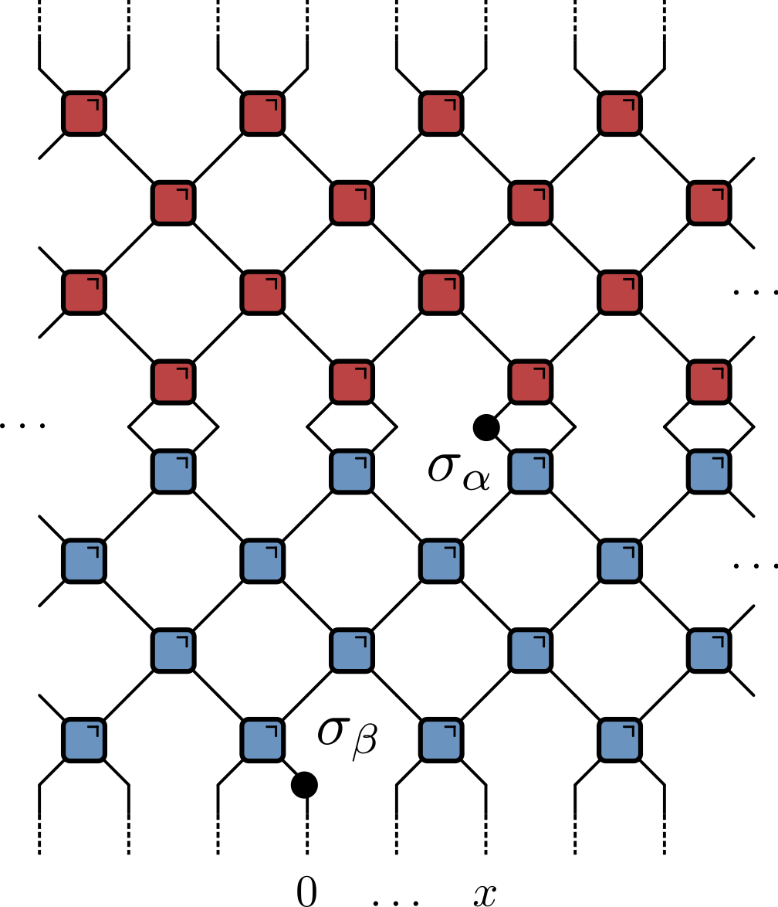
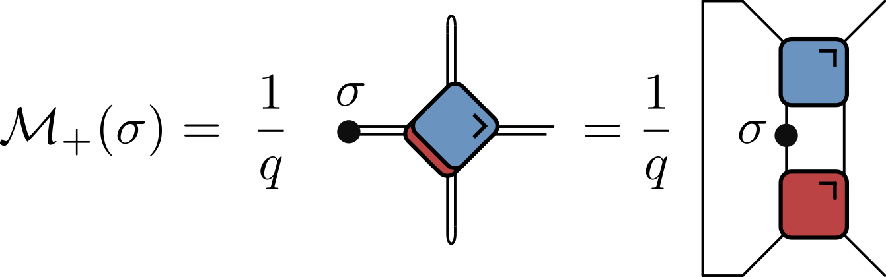
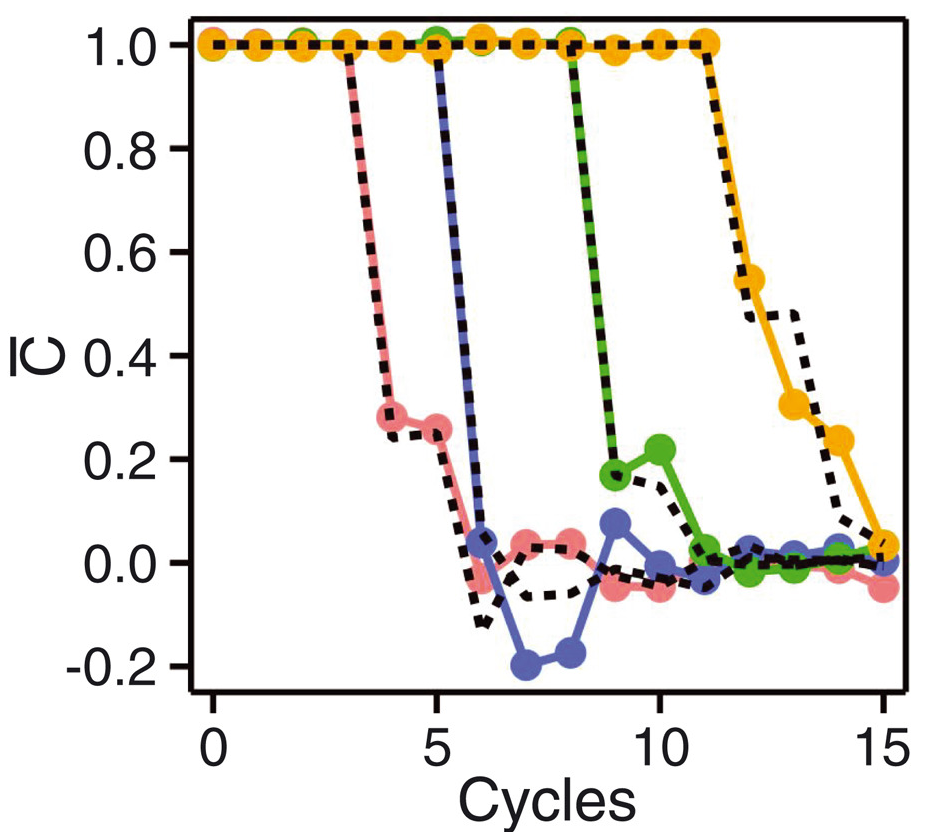

Quantum Circuits II
Austen Lamacraft
University of Cambridge
March 9, 2022
(Infinite temperature) Correlations
\[
c_{\alpha \beta}(x,t) = \langle \sigma_{\alpha}(x,t) \sigma_{\beta}(0,0) \rangle,\qquad \sigma_\alpha(x,t)=U^\dagger(t)\sigma_\alpha(x)U(t)
\]
Vanishes when \(|x|>t\) (outside light cone)

On the light cone
Quantum channel
\[
\begin{align}\label{eq:CorrChannels}
\langle \sigma_{\alpha}(t,t) \sigma_{\beta}(0,0) \rangle &= \tr \left[\sigma_{\beta}\mathcal{M}_{-}^t(\sigma_{\alpha})\right] / q \\
&= \tr \left[ \sigma_{\alpha}\mathcal{M}_{+}^{t}(\sigma_{\beta})\right] / q
\end{align}
\] - Calculating correlator involves repeated application of

Typical behaviour of correlations
Surprising that correlations can be found at arbitrary distances!
Correlations for dual unitaries
Bertini, Kos, and Prosen introduced above formalism for dual unitaries
Recall light cone \(|x|\leq t\) was implied by unitarity
Dual unitarity implies correlations also vanish for \(|x|\geq t\)
Only nonzero correlations are on the light cone
Effect of conservation laws
\(SU(2)\) preserving gate
\[
U_{j,j+1} = \cos\theta \mathbb{1}_{j,j+1} + i\sin\theta \operatorname{P}_{j.j+1}
\]
\begin{multline} \mathcal{O} \longrightarrow U^\dagger_{j,j+1}\mathcal{O}U_{j,j+1} = \cos^2\theta \mathcal{O} + \sin^2\theta \operatorname{P}_{j.j+1}\mathcal{O} \operatorname{P}_{j.j+1} \\ -i\sin\theta\cos\theta \left[\operatorname{P}_{j.j+1}, \mathcal{O}\right] \end{multline}
Average dynamics
\[\begin{multline}
\overline{U^\dagger_{j,j+1}\mathcal{O}U_{j,j+1}} = \cos^2\theta_0 \\, \mathcal{O} + \sin^2\theta_0 \\, P_{j.j+1}\mathcal{O} P_{j.j+1} \\\\
+i\delta \sin\theta_0\cos\theta_0 \left[P_{j.j+1}, \mathcal{O}\right]
\end{multline}\]
Interpretation:
Operators on sites \(j\) and \(j+1\) switch with probability \(\sin^2\theta_0\)
Asymmetry \(\delta\) governs strength of “quantum” dynamics
Continuous time limit
\[
\frac{d\bar{\mathcal{O}}}{dt} = \sum_j \left[iJ \left[P_{j,j+1},\bar{\mathcal{O}}\right]+\left(P_{j,j+1}\bar{\mathcal{O}}P_{j,j+1}-\bar{\mathcal{O}}\right)\right].
\]
\[\begin{align}
i[P,\sigma^a\otimes 1]&=-\epsilon^{abc}\sigma^b\otimes\sigma^c\nonumber\\\\
i[P,1\otimes \sigma^a]&=\epsilon^{abc}\sigma^b\otimes\sigma^c\nonumber\\\\
i[P,\sigma^a\otimes \sigma^b]&=\epsilon^{abc}\left(\sigma^c\otimes 1- 1\otimes \sigma^c\right).
\label{eq:split-merge}
\end{align}\]
Expansion in Pauli basis
\[
Z_j(t)= \sum_{\mu_{1:N}=\{0,1,2,3\}^N} \mathcal{C}_{\mu_{1:N}}(t) \sigma_1^{\mu_1}\otimes\cdots \sigma_N^{\mu_N},\qquad \sigma^\mu = (\mathbb{1},X,Y,Z)
\]
\[
\begin{equation}
\mathcal{C}\_{\mu_{1:N}}(0)=\begin{cases}
1 & \mu_j=z, \mu_k=0,\forall k\neq j \\\\
0 & \text{otherwise},
\end{cases}
\end{equation}
\]
Spin correlations \(\langle Z_j(t)Z_k(0)\rangle=C_{jk}(t) = \mathcal{C}_{0\cdots \mu_k=z \cdots 0}(t)\)
\(J=0\) : 1 operator sector
Writing \(\mathcal{C}^a_{0\cdots \mu_k=a\cdots 0}\equiv C^a_k\) we have equation of motion
\[
\partial_t C^a_k = C^a_{k+1} + C^a_{k-1} - 2 C^a_k\equiv \Delta_k C^a_k
\]
Diffusion of single \(\sigma^a\) (\(\Delta_k\) is 1D discrete Laplacian)
Equation of motion
\[
\begin{align}
\partial_t \mathcal{C}\_{\mu_{1:N}} = \sum_j \left[J\epsilon_{\alpha\beta \mu_j \mu_{j+1}} \mathcal{C}\_{\mu_1\cdots \alpha\beta \cdots \mu_N} + \mathcal{C}\_{\mu_1\cdots \mu_{j+1}\mu_j \cdots \mu_N} - \mathcal{C}\_{\mu_1\cdots \mu_{j}\mu_{j+1} \cdots \mu_N}\right].
\end{align}
\]
Operator spreading
Correlations (typically) decay exponentially
Doesn’t mean that operator dynamics is trivial!
What can we say about \(\sigma_\alpha(x,t)=U^\dagger(t)\sigma_\alpha(x) U(t)\) generally?
\[
Z_j(t)= \sum_{\mu_{1:N}=\{0,1,2,3\}^N} \mathcal{C}_{\mu_{1:N}}(t) \sigma_1^{\mu_1}\otimes\cdots \sigma_N^{\mu_N},\qquad \sigma^\mu = (\mathbb{1},X,Y,Z)
\]
Out of time order correlator
\[
\operatorname{OTOC}_{jk}(t) =\langle Z_j(t)Z_k(0)Z_j(t)Z_k(0)\rangle
\]
\[
Z_j(t)= \sum_{\mu_{1:N}=\{0,1,2,3\}^N} \mathcal{C}_{\mu_{1:N}}(t) \sigma_1^{\mu_1}\otimes\cdots \sigma_N^{\mu_N}
\]
\[
\operatorname{OTOC}_{jk}(t)\propto \sum_{\mu_{1:N}}\mathcal{C}_{\mu_{1:N}}^2(t)\left[\delta_{\mu_k,0}+\delta_{\mu_k,3}-\delta_{\mu_k,1}-\delta_{\mu_k,2}\right]
\]
\(\overline{\operatorname{OTOC}}\) : stochastic model\[
\hat{\mathcal{O}}^{(2)}(t)=\overline{\hat{O}(t) \otimes \hat{O}(t)} \equiv \overline{\hat{O}(t)^{\otimes 2}}
\]
\[
\hat{\mathcal{O}}^{(2)}(t)=\overline{\hat{O}(t) \otimes \hat{O}(t)} \equiv \overline{\hat{O}(t)^{\otimes 2}}
\]
Invariant subspace that survives averaging built from \(\mathsf{O} \equiv\mathbb{1}\otimes\mathbb{1}\) and \(\mathsf{1}\equiv\frac{1}{3}\left[X\otimes X + Y\otimes Y+ Z\otimes Z\right]\) on each site
Basis: \(\mathsf{S}_{1:N}\equiv\mathsf{S}_1\otimes \mathsf{S}_2\otimes\cdots \mathsf{S}_N\) , with \(\mathsf{S}_j=0,1\)
\[
\hat{\mathcal{O}}^{(2)}(t) = \sum_{\mathsf{S}_{1:N}\in\{\mathsf{0},\mathsf{1}\}^N} P_{\mathsf{S}_{1:N}}\mathsf{S}_{1:N}
\]
\[
\hat{\mathcal{O}}^{(2)}(t) = \sum_{\mathsf{S}_{1:N}\in\{\mathsf{0},\mathsf{1}\}^N} P_{\mathsf{S}_{1:N}}\mathsf{S}_{1:N}
\]
(Average of) gate provides update rule for \(P_{\mathsf{S}_{1:N}}\) \[
P_{\mathsf{S}_{1:N}}(t+1) = \sum_{\mathsf{S}'_j, \mathsf{S}'_k} P_{\mathsf{S}_1\cdots \mathsf{S}_j \mathsf{S}'_{j+1}\cdots \mathsf{S}'_N}(t)\Omega_{\mathsf{S}'_j \mathsf{S}'_k,\mathsf{S}_j \mathsf{S}_k}
\] \[
\begin{gathered}
\Omega=\left(\begin{array}{cccc}
1 & 0 & 0 & 0 \\
0 & 1-a-b & a & b \\
0 & a & 1-a-b & b \\
0 & \frac{b}{3} & \frac{b}{3} & \left(1-\frac{2}{3} b\right)
\end{array}\right) \\
a=\frac{1}{3}\left(2 \sin ^{2} \theta+\sin ^{4} \theta\right) \qquad b=\frac{1}{3}\left(\frac{1}{2} \sin ^{2} 2 \theta+2\left(\sin ^{2} \theta+\cos ^{2} \theta\right)\right)
\end{gathered}
\]
\(\theta=\pi/2\) for \(i\operatorname{SWAP}\) , \(\theta=\pi/4\) for \(\sqrt{i\operatorname{SWAP}}\)
Markov process
\[
\begin{gathered}
\Omega=\left(\begin{array}{cccc}
1 & 0 & 0 & 0 \\
0 & 1-a-b & a & b \\
0 & a & 1-a-b & b \\
0 & \frac{b}{3} & \frac{b}{3} & \left(1-\frac{2}{3} b\right)
\end{array}\right) \\
\end{gathered}
\]
\[\require{extpfeil} \Newextarrow{\xleftrightharpoon}{5,10}{0x21CB}
\mathsf{10} \xleftrightharpoon[a]{a} \mathsf{01} \qquad \mathsf{11} \xleftrightharpoon[b/3]{b} \mathsf{10},\mathsf{01}
\] - \(\mathsf{00}\) is “inert”
Fredrickson–Andersen model
Stationary state: independent sites with \(p_1=3/4\) , \(p_0=1/4\)
Butterfly velocity
Front propagation characterised by finite velocity \(v_\text{B}\)
Front broadening
Front broadens unless \(v_\text{B}\) maximal as for \(i\operatorname{SWAP}\)

\(i\operatorname{SWAP}\) (left) vs. \(\sqrt{i\operatorname{SWAP}}\) (right)
OTOC fluctuations
Circuit-to-circuit fluctuations of OTOC from
\[
\hat{\mathcal{O}}^{(4)}(t)=\overline{\hat{O}(t) \otimes \hat{O}(t) \otimes \hat{O}(t) \otimes \hat{O}(t)} \equiv \overline{\hat{O}(t)^{\otimes 4}}
\]
Go through same procedure of identifying invariant states
Evolution of average now involves negative matrix elements
Leads to sign problem in Monte Carlo simulation
Same problem for \(\overline{\operatorname{OTOC}}\) in models with number conservation (Rowlands and Lamacraft )